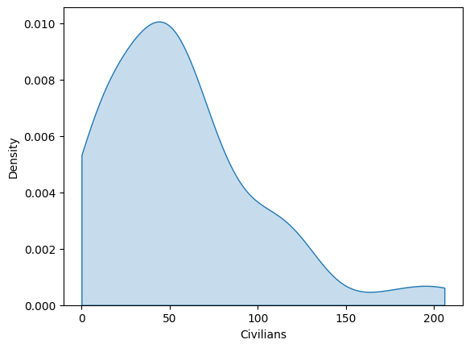

Group 1: Maria Chatzigeorgiou, Sophie Deahl, Balint Rekasi, Kian Smit
In this assignment, we plotted various graphs using Python and the data provided. Below are some of the graphs we created, along with brief explanations of what each graph represents.
This histogram displays the frequency of occurrences of casualties per month, within the range of NATO official figures.
A KDE (Kernel Density Estimation) is the smooth version of the histogram. This KDE displays again the occurences of casualties in the Afghan War, but in this case civilians.
This bar plot displays the total number of casualties (including both civilians and Afghan forces) on a monthly basis over a six-year period during the Afghan War.
The line plot displays the same information as the bar plot, but it emphasizes casualties over time, making it easier to see patterns or fluctuations.